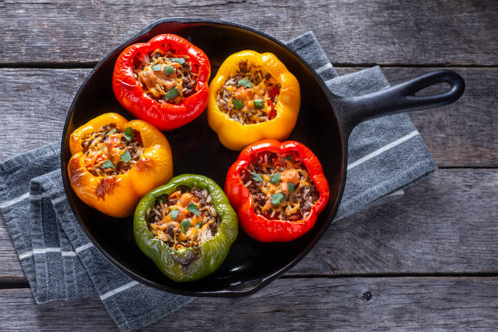

Stuffed Peppers
Home

Description
Stuffed peppers is a dish common in many cuisines. It consists of hollowed or halved bell peppers filled with any of a variety of fillings, often including meat, vegetables, cheese, rice, or sauce. The dish is usually assembled by filling the cavities of the peppers and then cooking.
Traditionally, the filling is made of rice steamed in advance, onions, minced meat and spices, heat-treated and crammed into pre-cleaned, washed and riddled with needle peppers. After filling of peppers, they are put in a baking dish, water is added and the dish is baked in the oven. If raw egg is added to the cooled stuffing, filled peppers can be cooked in a pan, as the pods are boiled almost steamed.
Ingredients
- 6 whole bell peppers
- 3 tbsp. olive oil
- 8 oz. lean ground beef
- Salt and pepper, to taste
- 1 medium onion, chopped
- 3 cloves garlic, finely chopped
- 1 cup cooked rice
- 4 roma tomatoes, diced
Steps
- Cut the tops off the peppers. Remove and discard the stems, then finely chop the tops; set aside. Scoop out the seeds and as much of the membrane as you can.
- In a large skillet, heat 2 tablespoons of the olive oil over medium-high heat. Add the beef, season with salt and pepper, and cook, breaking up the lumps, until the meat is cooked through. Remove to a plate.
- Add the remaining tablespoon of olive oil to the pan. Add the onion and chopped peppers, and cook until they begin to soften, 3 to 4 minutes. Add the garlic and zucchini, and cook for another minute. Add the tomatoes and season with more salt and pepper. Cook until everything is heated through, then stir in the beef and rice.
- Preheat the oven to 350°F
- Place the peppers, cut-side up, in a baking dish just large enough to hold them upright. Fill the peppers with the rice mixture. Pour a small amount of water into the bottom of the baking dish. Cover with foil and bake for 30 minutes.